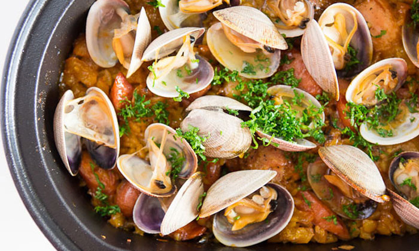

Shrimp have a wide variety of preparation methods. A common one is to butterfly them. This lays the meat flat while still keeping it intact. Different methods of cooking the shrimp include grilling, frying, baking, and more.
Ingredients
2 cups fresh bread crumbs
16 extra large shrimp, peeled and deveined, tails left on
Freshly ground black pepper
Salt
2 tablespoons chopped fresh oregano leaves
1 tablespoon chopped fresh thyme leaves
2 tablespoons chopped fresh parsley leaves
2 tablespoons chopped fresh basil leaves
1 tablespoon chopped garlic
4 ounces butter, melted
4 cups arugula, cleaned
2 tablespoons extra-virgin olive oil
1/2 lemon, juiced
Lemon wedges, for garnish
Directions
Preheat the oven to 400 degrees F.
Spread the bread crumbs evenly on a baking sheet and toast in the oven until golden brown, about 10 minutes. Watch them carefully as they burn very quickly. Remove from the oven and cool. Raise the oven to 500 degrees F.
Butterfly the shrimp by slicing from the tail to the front on the top of the shrimp, where the vein was. Slice as deep as possible without cutting all the way through. Turn the shrimp over and make 3 small shallow slits horizontally across the shrimp, being careful not to cut all the way through. These slits will prevent the shrimp from curling during cooking. Season with salt and pepper and set aside.
Mix together the oregano, thyme, parsley, basil and garlic. Add the garlic herb mixture to the bread crumbs and mix well. Season with salt and pepper.
Brush a large ovenproof skillet with some of the melted butter, coating the bottom well. Dip the shrimp in the butter, opened side down, and then dredge in the bread crumbs, pressing so they stick. Place the shrimp, bread crumb side up, in the skillet in 1 layer.
When all of the shrimp are in the pan, drizzle the top with a little more of the melted butter. Bake for about 5 minutes, or until the shrimp are just cooked through and the bread crumbs are golden brown.
Toss the arugula with the olive oil and lemon juice and season with salt and pepper. Divide the arugula among 4 plates. Place 4 shrimp around each pile of arugula. Drizzle with more butter, if desired, and serve with lemon wedges.
Calamari
Fried squid, or calamari, is a food that can be found in a huge amount of countries including Spain, the US, Mexico, Lebanon, Syria, South Africa, China, Japan, and more. Although all calamari is fried, it can be fried in different batters, stewed in gravy, or served in stir fry depending on where you eat it.
Ingredients
1 cup all-purpose flour
2 teaspoons salt
1 teaspoon paprika
¼ teaspoon ground black pepper
1 teaspoon garlic powder
6 cups vegetable oil for frying
12 ounces frozen calamari rings
Salt
2 tablespoons cocktail sauce
1 lemon
Directions
Stir flour, 2 teaspoons salt, paprika, and black pepper together in a shallow bowl.
Heat oil in a deep-fryer or large saucepan to 375 degrees F (190 degrees C).
Press calamari rings into the flour mixture until evenly coated, shaking off excess flour.
Working in batches, fry calamari rings in the hot oil until golden brown, 3 to 4 minutes. Transfer cooked calamari to a paper towel-lined plate; sprinkle with salt. Serve calamari with cocktail and lemon wedges.

Clam and Chicken Paella
Paella is a Spanish dish that originates from Valencia. Seafood, served in the shell, is a common addition to paella that spreads beyond the region of Valencia.
Ingredients
1 tablespoon sweet or smoked paprika
2 teaspoons oregano
1 (3 pound) frying chicken, cut into 10 pieces
1/4 cup extra-virgin olive oil
2 Spanish chorizo sausages, thickly sliced
Kosher salt and freshly ground pepper
1 Spanish onion, diced
4 garlic cloves, crushed
Bunch flat-leaf parsley leaves, chopped, reserve some for garnish
1 (15-ounce) can whole tomatoes, drained and hand-crushed
4 cups short grain Spanish rice
6 cups water, warm
Generous pinch saffron threads
1 dozen littleneck clams, scrubbed
1 pound jumbo shrimp, peeled and de-veined
2 lobster tails
1/2 cup sweet peas, frozen and thawed
Lemon wedges, for serving
Directions
Combine the paprika and oregano in a small bowl. Rub the spice mix all over the chicken and marinate chicken for 1 hour in the refrigerator.
Heat oil in a paella pan over medium-high heat. Saute the chorizo until browned, remove and reserve. Add chicken skin-side down and brown on all sides, turning with tongs. Add salt and freshly ground pepper. Remove from pan and reserve.
In the same pan, make a sofrito by sauteing the onions, garlic, and parsley. Cook for 2 or 3 minutes on a medium heat. Then, add tomatoes and cook until the mixture caramelizes a bit and the flavors meld. Fold in the rice and stir-fry to coat the grains. Pour in water and simmer for 10 minutes, gently moving the pan around so the rice cooks evenly and absorbs the liquid. Add chicken, chorizo, and saffron. Add the clams and shrimp, tucking them into the rice. The shrimp will take about 8 minutes to cook. Give the paella a good shake and let it simmer, without stirring, until the rice is al dente, for about 15 minutes. During the last 5 minutes of cooking, when the rice is filling the pan, add the lobster tails. When the paella is cooked and the rice looks fluffy and moist, turn the heat up for 40 seconds until you can smell the rice toast at the bottom, then it's perfect.
Remove from heat and rest for 5 minutes. Garnish with peas, parsley and lemon wedges.
Grilled Ahi Tuna Salad
Tuna salad is a dish that is commonly found using tuna and mayo. Canned tuna is often used, but an equally common dish includes grilled ahi tuna served as an actual salad.
Ingredients
1/4 cup rice wine vinegar
1 tablespoon soy sauce
1/2 lime, juiced
1 teaspoon grated ginger
1 teaspoon Chinese mustard
1 tablespoon chopped cilantro
1/2 cup canola oil
1 1/2 pounds Ahi tuna loin, cut in 4 strips
Salt and pepper
2 tablespoons dark sesame oil
1/3 cup sesame seeds
1 bunch mizuna greens
1 bunch arugula greens
3 cups torn red leaf lettuce
3 cups torn green leaf lettuce
2 green onions, chopped
1/2 cup fried rice noodles
1/4 cup slivered almonds, toasted
1 navel orange, peeled and sectioned
Directions
In a small bowl, whisk together the vinegar, soy sauce, lime, ginger, mustard and cilantro. Pour in the oil and continue to whisk until emulsified.
Season the tuna fillets with salt and pepper; lightly coat with oil. Put sesame seeds on a plate. Coat top and bottom of each fillet with seeds. Heat a large, dry skillet over high heat. Add fillets; cook about 3 minutes. Turn; cook until desired doneness, about 3 to 4 minutes for rare. Slice the tuna into 1-inch thick strips.
Mix the greens together and spread out on a platter. Add the green onions, rice noodles almonds, and orange segments. Lay the tuna strips on top then drizzle with the vinaigrette. Season with salt and pepper and serve immediately.
King Crab Legs
King crabs are massive crabs, often served only in “leg form”. Depending on where they’re served, you can usually see them boiled and served with garlic or lemon butter.
Ingredients
2 lbs king crab legs
1⁄2 cup butter (salted or unsalted)
1⁄2 head garlic
1⁄2 lemon, juice of
1⁄2 lime, juice of
1⁄8 cup extra virgin olive oil
sea salt (optional)
dried parsley (optional)
Directions
Preheat your oven to 375 degrees. Meanwhile, grab yourself a small saucepan. On med low heat, melt the butter. Add the garlic and lightly sauté. Squeeze in the juice of the citrus of choice. If using a lemon, squeeze the juice into your hands so that you can remove the seeds with ease. Turn the heat to low and let those flavors mesh until the oven is nice and hot. Toss in as much salt (to taste) and a couple pinches of parsley. Then whisk in that olive oil with a fork. Turn off your burner.
Bake your crabs for about 25 minutes or so, brushing the sauce from the bottom of the pan onto the legs every 5-7 minutes. Remove from oven. Sprinkle with a few pinches of parsley for garnish.
Lobster Tails
A common staple in high class seafood cuisine, lobster tails can reach ridiculous prices, and for good reason. The tail of the lobster contains the most amount of meat and is easily accessible (unlike the rest of the lobster meat).
Ingredients
2 whole lobster tails
½ cup butter
½ teaspoon ground paprika
Salt
Ground white pepper
1 lemon
Directions
Preheat the broiler.
Place lobster tails on a baking sheet. With a sharp knife or kitchen shears, carefully cut top side of lobster shells lengthwise. Pull apart shells slightly, and season meat with equal amounts butter, paprika, salt, and white pepper.
Broil lobster tails until lightly browned and lobster meat is opaque, about 5 to 10 minutes. Garnish with lemon wedges to serve.
Roasted Red Snapper
Whole red snapper is another seafood staple that can be served in a variety of ways depending on where you eat it.
Ingredients
1 2-to 2 1/4-pound whole red snapper, cleaned
1 tablespoon minced garlic
1 tablespoon fresh lemon juice
3/4 teaspoon seafood seasoning
2 tablespoons (1/4 stick) chilled butter, cut into pieces
6 fresh thyme sprigs
6 thin lemon slices
Directions
Place 24x18-inch piece of foil on heavy large baking sheet. Butter foil. Place fish in center of foil. Season cavity of fish with garlic, lemon juice and seafood seasoning. Dot cavity with butter. Arrange thyme sprigs inside cavity. Sprinkle outside of fish with salt and pepper. Top with lemon slices. Fold edges of foil over fish; seal. (Can be made 1 day ahead. Refrigerate.)
Preheat oven to 350°F. Bake fish until cooked through, about 45 minutes. Transfer fish to platter. Open foil.
Sliced Abalone
Abalone is a valuable food that can be found in many areas of the world. It is usually considered a delicacy and can be found in parts of Latin America, France, Southeast Asia, China, Vietnam, Japan, and Korea.
Ingredients
5 Small Fresh Frozen Abalone
1 lb of baby bok choy
⅓ lb dried shitake mushroom
1 Medium carrot thinly sliced in ⅛ inch thick slices
1 tbsp soy sauce
4 tbsp oyster sauce
3 ½ cup chicken stock
½ cup dry white wine
½ tsp sesame oil
1 cup water
6 thin slices of ginger
2 cloves garlic
½ tsp black pepper
½ tsp salt
Directions
Remove the abalone from the shell.
In a medium sized pot add 2 cups of chicken broth, white wine, ½ cup water, 3 tbsp LKK Premium Oyster Flavour sauce, Black Pepper, Ginger slices and 2 cloves of garlic smashed and skin removed. Bring the mixture to a boil, then add the abalone and turn down heat to a low simmer. Allow to simmer for about 2 hours and check done-ness by pushing a knife through the thickest part of the abalone, if it goes through easily, it is done. If it is not done check back every 20 minutes until ready.
When done remove abalone from the broth and place into a covered dish. Reserve ½ cup of the liquid for use in the next step.
Soak the dried shitake for at least 2 hours in luke warm water.
Remove the stems from the mushroom and clean
Place the mushrooms in a small pot with the ½ cup of Abalone liquid from the first part along with another ½ cup of chicken stock and bring to a boil and then simmer for 15 minutes. During the final 2 minutes throw in the carrot slices.
Clean the Bok Choy and separate the leaves into individual pieces.
In a heated wok add a couple tablespoon of oil, salt and ½ cup of water then throw in the bok choy and stir for about 2 minutes under high heat. The bok choy should still have good colour and still be a bit crunchy and not limp. Quickly poor out into a heat resistant strainer and allow to drain well.
Now start assembling the dish for serving by placing the Bok Choy in centered pile and then distributing the mushrooms evenly over the top. Add the carrots strategically around the plate then do the same with the Abalone.
Now prepare the sauce by heating the wok under medium high heat and add in the ½ cup Chicken Stock, remaining Mushroom and abalone sauce, the Oyster sauce and the soy sauce. Bring to a boil and make a cornstarch slurry by adding 1 tablespoon of corn starch with 3 tablespoon of water. Add this to the sauce and allow to thicken then add the Sesame oil and mix well then drizzle the sauce over the dish just until it is well covered. Serve hot for best results.